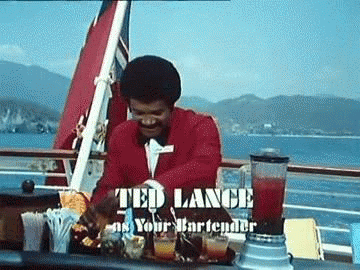

Dette Technique
responsabilité collective, solution individuelle?
Présenté par Brice Favre
AVERTISSEMENT : Malgré le soin porté à la rédaction de ces slides, ils peuvent contenir des traces de trolls, de blagues à deux balles et de bisounours.
Genesis
Les composantes
- La dette elle-même
- Le remboursement des intérêts
- Le remboursement de la dette
Les conditions de l'expérience
{
"Criticité" : "Moyenne",
"Technologies" : "Variées",
"Qualité initiale" : "Moyenne",
"Equipe initiale" : "Plus là"
}
Déroulement
Commençons par...
Décrassage
Tâches
- Lecture de code
- Documentation
- Intégration d'évolutions
Deuxième phase : Je zone
- Zone d'inconfort
- Zone d'opportunité
- Zone de confort
Je ne sais pas

Solution
- Se concentrer sur les bases
- Déléguer le reste
Agir sur la dette en...
- Évitant de l'aggraver.
- Établissant des passerelles.
Je pense savoir
Je suis tes pairs
Actions
- Du pair programming
- De la revue de pair
Agir sur la dette en...
- Partageant la connaissance
- Partageant la compétence
- Participant aux chantiers en cours
Je me débrouille comme un chef
Mais je reste humble
Schéma de travail
(Je vous avais dit que je gérais en graphisme)Agir sur la dette en...
- Rendant le code plus lisible
- Rendant le code plus fiable
Leçon numéro 0

Coder mieux pour être mieux
Leçon numéro 1

La solution est dans la team
Leçon numéro 2
- Prendre conscience du problème, le nommer
- Chercher des solutions
- Saisir les opportunités pour les appliquer
And now!
Merci
A vos questions!
Slides : https://github.com/brice/fighting-nemesisTwitter : @briceatwork